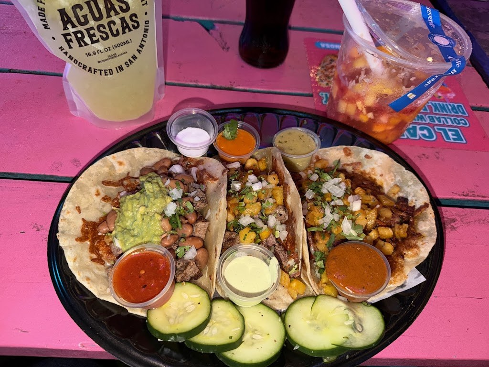
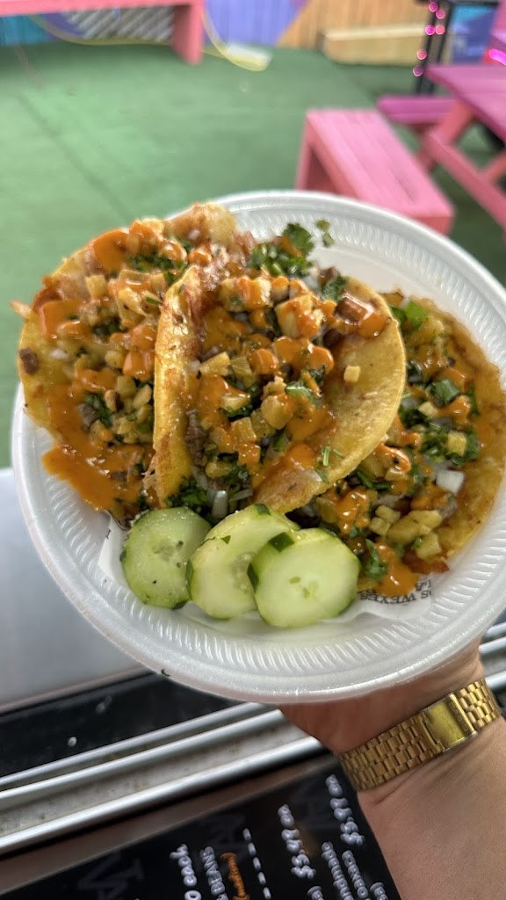
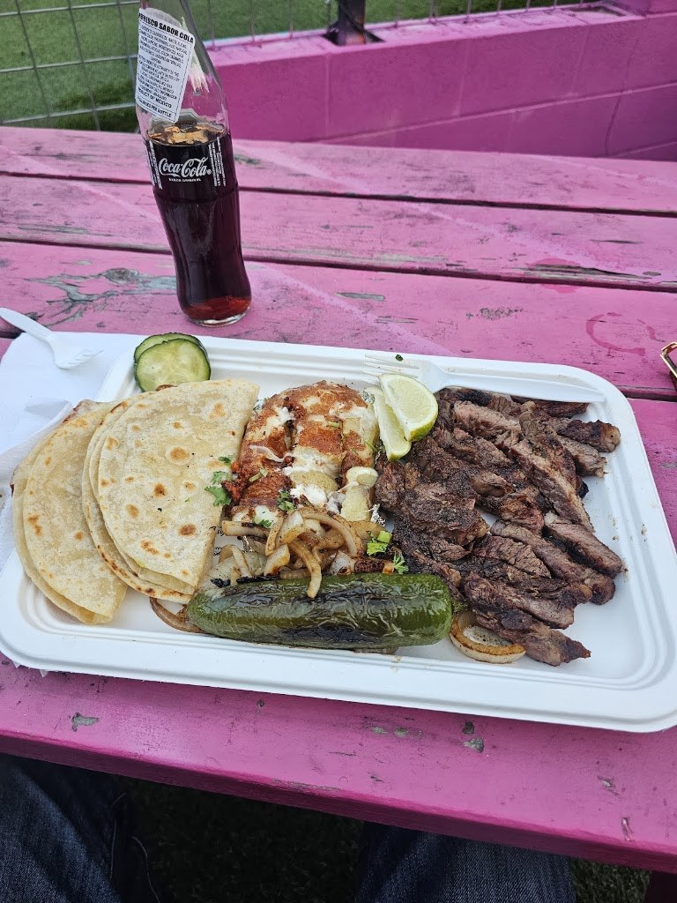

Tacos and plates at Los Weyes de la Asada
Mesquite-charcoal grilled tacos in San Antonio, home of the Mamon Taco, at the El Camino food truck park.
Gallery



All three photos are real photos from the business's Google Maps listing. They show assorted tacos with fresh salsa and cucumber on a pink picnic table, a plate of tacos held in a hand, and a styrofoam plate with carne asada, tortillas, and cucumber on a pink picnic table.
Contact
Los Weyes de la Asada serves San Antonio, TX. Questions? Call (210) 788-9121.